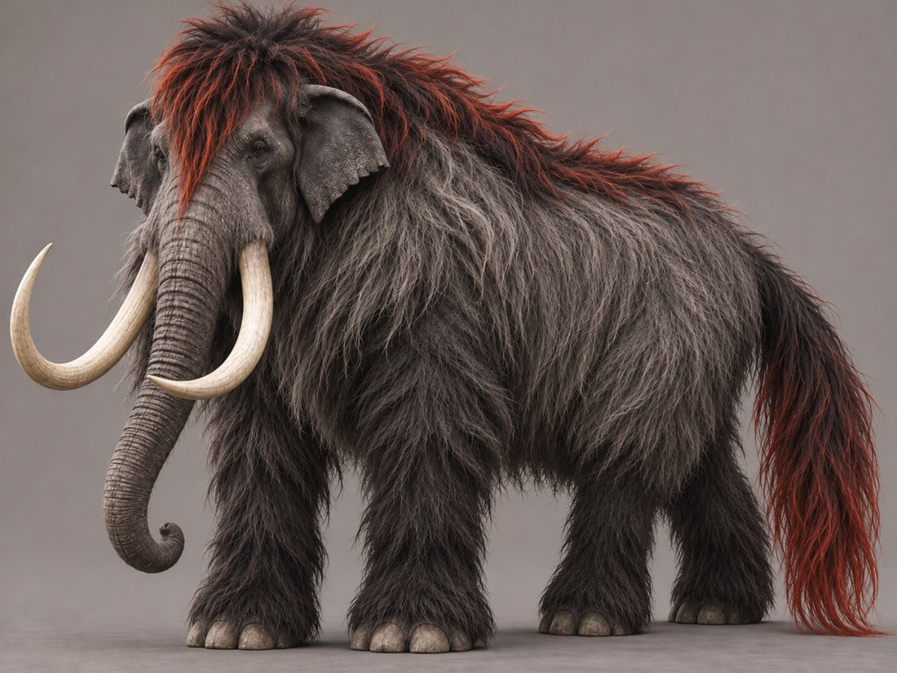
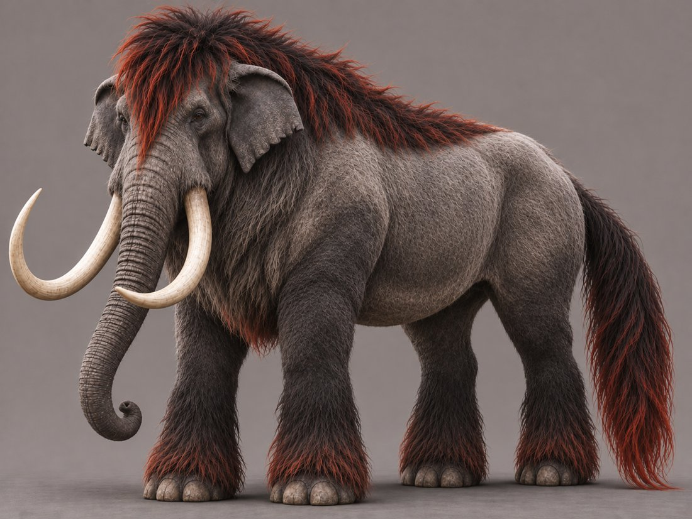
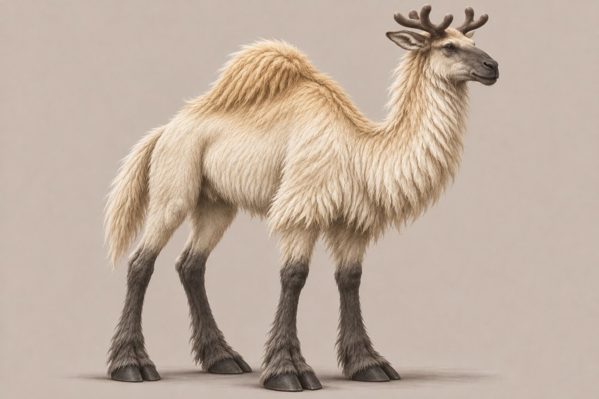
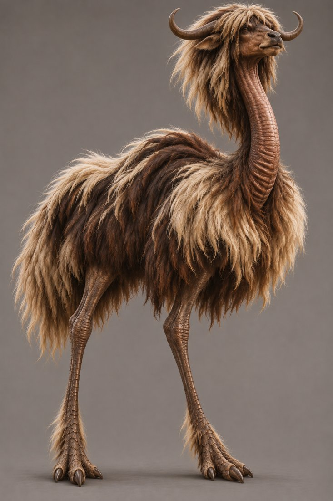
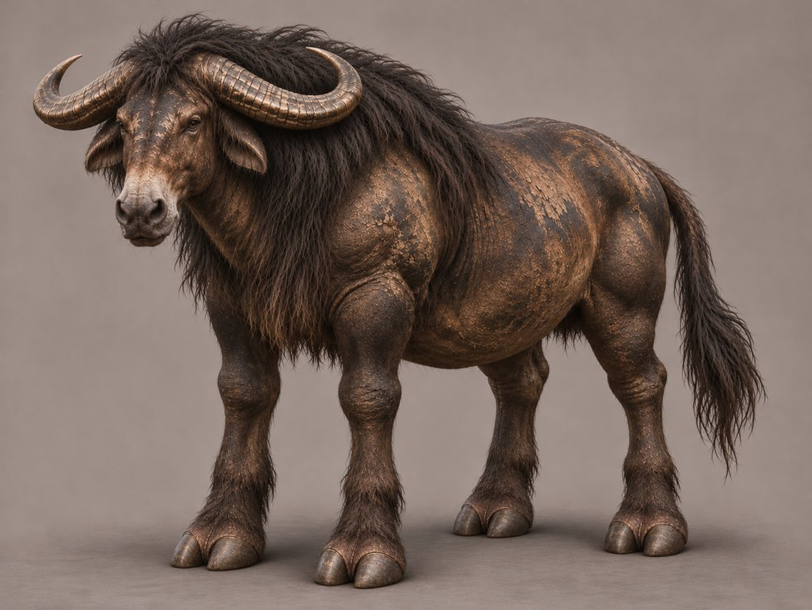

Working Mounts
Four bred, domesticated mounts, each tied to a territory, a house and a job. They are infrastructure, not wild fauna, though wild forms exist and some survive now only in captivity. Decided
| Mount | Cross | Job | Tied to |
|---|---|---|---|
| Vulqorith | Woolly mammoth and Asian elephant | Heavy cavalry | Lamjamon, House Vulqaq |
| Vaminorun | Camel and reindeer | Endurance across climates | Belishael |
| Vaethorith | Ostrich and yak | Courier and speed | Belishael’s network |
| Vondrorith | Mule and water buffalo | Draft, carriage and wetland work | Mresibooshle and the delta country |
Vulqorith
The name starts with Vul-, from House Vulqaq, and ends in -qorith to mark kinship with the Ruqorith, the other great beast of Ruqoravael.


- Cross
- A female woolly mammoth with a male Asian elephant. The only horse traits are a long horsehair tail and a forelock. Decided
- Build
- High-domed head, sloping back, medium ears, long curved pale-ivory tusks, a flexible trunk and broad elephant feet. No mane. Decided
- Coat
- Ash-grey to charcoal with ember-red tips on the forelock, crest hair and tail. Colour varies as horses do: smoke-grey, charcoal-black, ash-dun, and rarely ember-red. Heavy in the cool season, shed or sheared in the hot season. Decided
- Leg tufts
- Ember-red at the root, turning ash-black in the field from walking through ash. A washed and groomed animal shows the full red. Decided
- Colour as status
- Groomed and red means ceremony or high rank. Soot-dark means working and fighting stock, which also hides well on dark volcanic ground. Decided
- Range
- The cooler volcanic highlands in the hot season, for breeding and calving. The Ruqoravael savanna in the cool season. Decided
- Handled by
- Lamjamon’s heavy cavalry, bred in Ruqoravael and the volcanic highlands. House Vulqaq runs the breeding programme, the wool harvest and the manure and hide economy as one operation. Decided
Wool
The shed or sheared coat is a harvested fibre, taken at the seasonal molt. The soft underwool goes into fine cloth, and the coarse guard hair into rope, felt and padding. Decided See Fibres.
Limits
A Vulqorith needs a large daily supply of clean water and fodder. It browses, so it does not compete with the Ruqorith for grass. It is kept out of tended butter-tree parkland, where cutting trees is taboo. Decided
Water
The sobil taint lies mostly in the southwest, toward the floating islands and the mines. The highlands and the northern savanna are clean. Decided Herds are never driven to the tainted waterfalls, and a fouled or redirected spring is Lamjamon’s chief military weakness, with Zamodes holding the tainted side. Decided
The war drum
The Vulqorathum is made from the skull of a Vulqorith that died of old age. Decided
Vaminorun
Vamihona, the salt flats, plus -orun, the large-creature suffix that also anchors Vorunith.

- Cross
- A camel with a reindeer. Decided
- Build
- A camel’s long curved neck and a single fat-storing hump. A deer-like head with antlers in velvet. Sturdy legs ending in wide, splayed cloven hooves that work as snowshoes or sand-shoes. Decided
- Antlers
- Juveniles carry small, low antlers with about two tines. Adults carry three to four tines, still a modest crown. Decided
- Coat
- Shaggy pale cream-white, a little warmer along the back and hump, with charcoal-grey legs, muzzle and hooves. The coat shifts with the seasons: fully white in the cold season, cream with dark points in the hot season. Decided
- Niche
- Reliable travel between Xathhona’s heat and the cold of the inverted mountains’ peaks without switching animals. Decided
- Handled by
- Belishael, Diplomat of Infernal Gates. Decided
Vaethorith
Vaeth-, from Vaethpoja, the inverted mountains, plus -orith.

- Cross
- An ostrich with a yak. Decided
- Build
- Very long ostrich-proportioned legs. A long, flexible, bare, wrinkled neck, slightly thicker than an ostrich’s. A small yak-like head with crescent horns and long shaggy hair from the head, crown and brow. A heavy-boned body under a thick, fringed coat. Decided
- Feet
- Three-toed and lightly feathered, steady on steep ground and able to move sideways. Decided
- Role
- A speed mount rather than an endurance one. Courier and messenger use for Belishael’s network, between Mavetovu’s mountaintop and wherever a negotiation is held. It is not the carriage animal. Decided
Vondrorith
Vondra-, the waterway root that also anchors Vondrun, Vondravit and House Vondraq, plus -orith.

- Cross
- A mule with a water buffalo. Decided
- Build
- A massive barrel body and thick legs. Dark, mottled, cracked, weathered hide with coarse dark hair and a shaggy mane across neck and shoulders. A mule-like face with a pale muzzle, low drooping ears edged with coarse buffalo hair, wide ridged buffalo horns and a long tufted tail. Decided
- Feet
- Broad, widely splayed two-toed hooves with skin between the toes, built for marsh ground. On firm ground the toes close into a narrow hoof, and in mud they spread. Decided
- Role
- The general draft and carriage animal, no longer limited to wet ground. It is the standard working animal of Mresibooshle’s swamp floor and the delta stretches of Dagan’s and Belzevuv’s territory, and everyone in the contested borderland agrees on using it. Decided